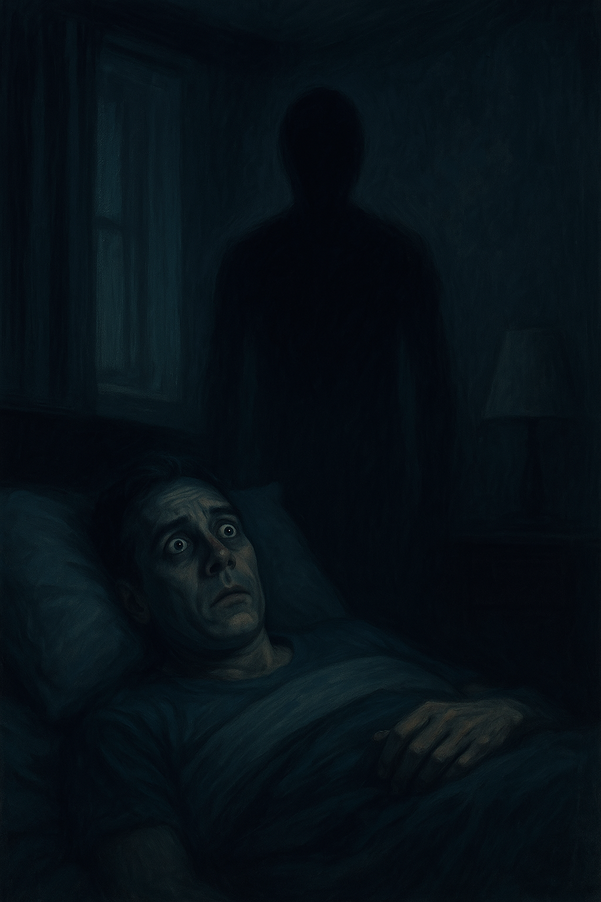

Paraliza sna je trenutak kada se mozak probudi pre tela — svest je budna, ali ti ne možeš da se pomeriš, ni da progovoriš. To stanje često dolazi u tišini, uz osećaj kao da nisi sam u sobi. I dok nauka govori o poremećaju sna, mnogi ga doživljavaju kao susret sa nečim natprirodnim.
"Kad se probudiš, ali ne možeš da pobegneš"
U trenucima paralize sna, mnogi širom sveta tvrde da su videli oblike koji ne pripadaju budnom svetu, ali nisu ni deo sna. Ta bića ne dolaze sa zvukom — samo sa prisustvom. I osećajem da nisi sam.
Najčešće svedočenja govore o senkama sa očima, figurama koje sede na grudima, siluetama bez lica koje stoje u uglu sobe, ili prisustvu koje šapuće tik uz uvo — iako nema nikoga. Ponekad je to samo tama iza vrata. Ponekad nešto što ne vidiš, ali znaš da je tu.
Folklor to naziva morom, demonima, noćnicima. Nauka to zove halucinacijom tela koje je budno, a još zarobljeno snom. Istina — kao i uvek — leži negde između.
Jul 2004. godine — Milena A. , tada 29-godišnja medicinska sestra iz Vranjske Banje, provela je vikend sama u kući svojih roditelja. Bila je zagušljiva noć, prozor poluotvoren, a ulica tiha.
„Ležala sam na leđima, znam da sam zaspala normalno. Ali kad sam otvorila oči, nisam mogla da pomerim ruke. Ni noge. **Ni da okrenem glavu. Samo oči.**“
U tom stanju, kaže da je čula **šum koraka** — ali ne hodnika ili dvorišta, već unutar sobe, kod vrata. U ogledalu naspram nje, videla je nešto: **figura žene, visoka, u senci.** Stoji ispred vrata, ali ne pokušava da uđe. Samo posmatra.
„Pokušala sam da vrištim, ali u grlu je bio kamen. A kad sam trepnula — figura je bila bliže. I dalje u ogledalu, ali ne i u sobi. Kao da se prikazuje **samo tu.**“
Milena kaže da se sve prekinulo kada je čula vlastiti glas kako šapuće: _„Zatvori oči.“_ Nije sigurna da li je to pomislila, sanjala ili čula — ali kada ih je zatvorila, uspela je da pomeri telo.
Sutradan, na ogledalu je primetila **bledu crtu**, kao da je neko povukao prstom od vrha do dna. Pokušala je da je obriše, ali staklo je bilo suvo. Crta je nestala tek **nekoliko sati kasnije — sama.**
Uvek sam znao kada dolazi.
Prvo uši — pritisak, kao kad roniš duboko.
Onda vazduh — previše miran.
I tišina. Ona gusta, koja se ne seče rečima.
Te večeri, nisam bio sam.
Znao sam to, iako niko nije govorio.
Nešto je stajalo kod ormara.
Ne kreće se.
Ali kad trepneš... bliže je.
Gledao sam pravo u njega.
Mrak u ljudskom obliku, bez očiju, ali znaš gde gleda.
Znaš da zna.
Soba je počela da diše — ne ja, ne on — soba.
U glavi samo jedno:
„Ako se pomeriš, videćeš ga gde jeste.“
I nisam se pomerio. Nisam disao. Nisam zaboravio.
Jovan R. iz okoline Kruševca imao je iskustvo koje dugo nije znao kako da objasni.
Tog dana je bio iscrpljen, neraspoložen, pa je rano legao.
Prvi put — zaspao je na leđima.
Probudio se brzo.
U trenutku kada je otvarao oči, čuo je jeziv huk u ušima — duboki, zastrašujući zvuk kao iz horor filma, baš pre nego što „nešto“ nastupi.
Istovremeno je osetio da ga nešto podiže iznad kreveta, ali telo nije moglo da se pomeri.
Oči su bile otvorene. TV je još uvek svetleo.
Soba ista, ali vazduh potpuno drugačiji — gusta, zagušljiva tišina.
Tada je počelo pucketanje.
Iz zida nasuprot kreveta, pojavila se crna senka koja se širila kao mastilo — gusta, neprirodna, kao da će nešto izaći iz zida.
Uplašen, nije mogao da vikne.
Nije mogao ni da se pomeri.
U sebi je šapatom počeo da se moli: „Oče naš...“
Kada je završio molitvu — sve je nestalo.
Senka se povukla, zvuk je iščezao, a telo se oslobodilo.
Zbunjen, još pod utiskom, pomolio se još jednom.
Nije znao da je upravo doživeo paralizu sna.
Ivana M., tada učenica treće godine srednje škole, provela je noć kod bake u selu iznad Valjeva tokom zimskog raspusta 2014. godine.
Soba je bila hladna, ali miris jasenovih drva iz peći stvarao je osećaj sigurnosti. Zaspala je ranije nego inače, zamotana u tri ćebeta.
Probudila se naglo, bez vidljivog razloga. Oči su joj bile otvorene, ali telo potpuno paralisano. Mogla je da vidi stari plakar, tepihe s motivom grožđa, i šustiklu na prozoru. I tada je čula — lagani škripavi korak, negde iza nje, iako su vrata bila zatvorena.
Kroz periferni vid, ugledala je figuru žene — niska, pogrbljena, u crnoj marami i debeloj suknji. Približavala se krevetu tiho, kao da klizi. Kad je stala pored kreveta, Ivana je osetila hladan dah na svom obrazu. Pokušavala je da vrišti, ali iz usta nije izlazio glas.
Žena se nagnula i počela da mrmlja reči koje nije razumela, kao molitvu, ali unatraške. Njeno lice nije imalo oči — samo koža prekrivena borama. I tada je tišina prestala. Neko staklo je puklo u daljini, pas u dvorištu zalajao, a „baba“ se istog trena povukla unazad i nestala kao dim.
U tom trenutku, Ivana je mogla da se pomeri. Nije bilo nikoga u sobi. Ali sledećeg jutra, na jastuku je bio otisak stopala veličine deteta — vlažan, sa tragom pepela.